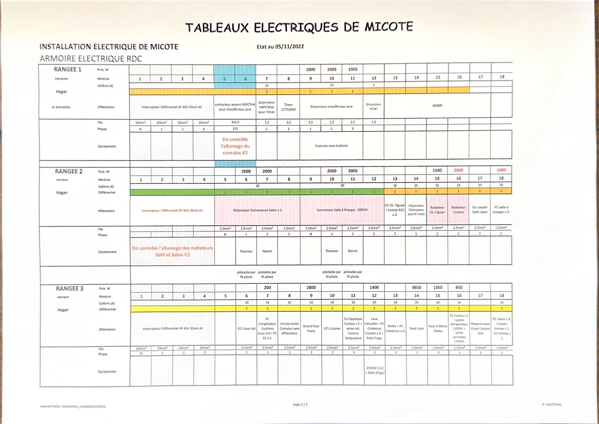
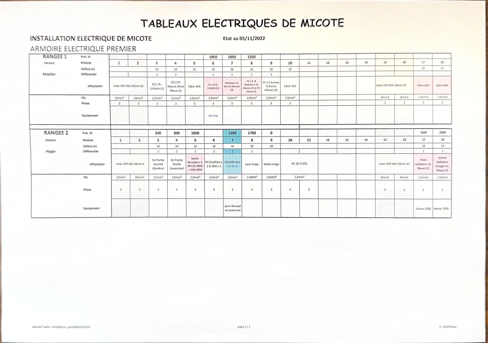
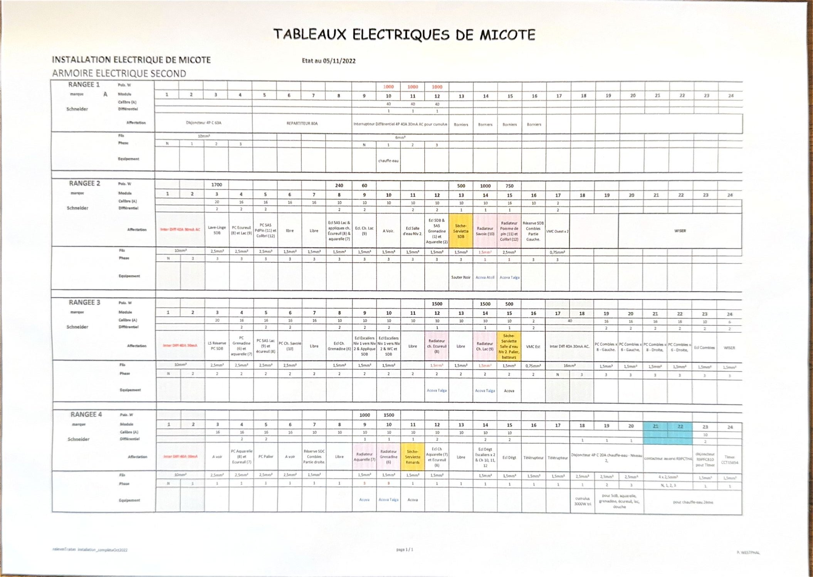

Document de référence. Le relevé complet des trois armoires, module par module, est reproduit plus bas : agrandissez l'image pour lire le détail. Cette page en résume les repères utiles au quotidien.
Repères Les trois armoires
- Rez-de-chaussée
- Placard avant-cuisine — 3 rangées (marques Hager et Schneider).
- Premier étage
- Dans l'escalier — 2 rangées (marques Moeller et Hager).
- Second étage
- Placard du sas Lac — 4 rangées (Schneider), avec le répartiteur 80 A.
Chaque rangée est protégée en tête par un interrupteur différentiel 40 A / 30 mA. Les circuits des cumulus sont repérés en bleu.
Utile Ce qu'on cherche le plus souvent
- 🚿 Cumulus de la cave (triphasé) : son allumage se commande à la rangée 1 de l'armoire du rez-de-chaussée.
- 🌡️ Radiateurs du salon et de la salle à manger : rangée 2 de l'armoire du rez-de-chaussée — convecteurs salon ×2 et salle à manger 2000 W.
- 🍳 Circuits de la cuisine (four, lave-vaisselle, frigo, congélateur, hotte, crédence) : rangée 3 de l'armoire du rez-de-chaussée.
- 💧 Chauffe-eau 150 litres du 1er étage, dédié à la salle de douche Renard : rangée 2 de l'armoire du premier.
- 🧺 Lave-linge et sèche-linge : armoire du premier étage.
- 🛏️ Radiateurs et sèche-serviettes des chambres du haut, ainsi que la VMC : armoire du second étage.
Relevé Le détail des armoires
Pour chaque module : calibre, différentiel, affectation, section de fil, phase et puissance de l'équipement raccordé.



Prudence : ce relevé sert au repérage. Toute intervention dans une
armoire relève d'un électricien. En cas d'anomalie, utilisez plutôt le
signalement.